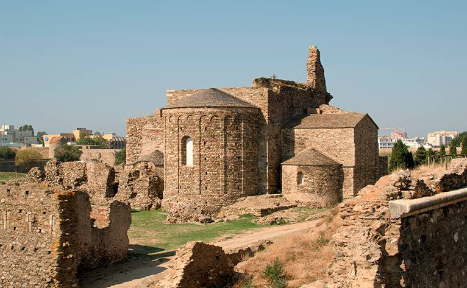
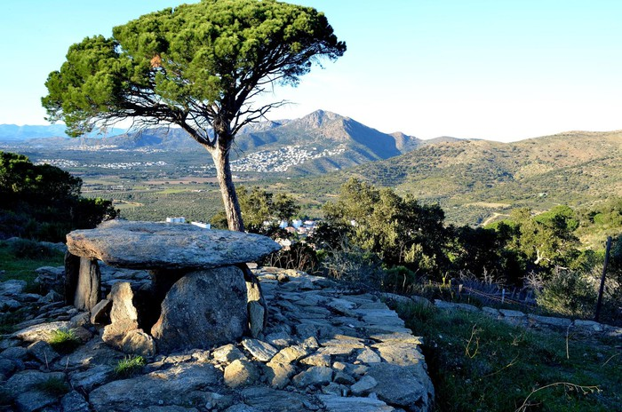

Rosas
Rosas (Roses en catalan), une ville pittoresque située sur la Costa Brava en Espagne, est une destination touristique populaire connue pour ses plages magnifiques, sa cuisine délicieuse et son riche patrimoine historique. La ville est nichée dans une baie avec les montagnes des Pyrénées en toile de fond, offrant des paysages à couper le souffle.
La ville de Roses est réputée pour ses plages de sable fin et ses eaux cristallines, ce qui en fait un lieu de prédilection pour les amateurs de soleil et de mer. Que vous préfériez vous détendre sur la plage, faire de la plongée ou pratiquer d'autres sports nautiques, Roses a quelque chose à offrir à tout le monde.
En plus de ses attractions naturelles, Roses est également connue pour sa cuisine. La ville est particulièrement célèbre pour sa "Suquet de Peix", une soupe de poisson traditionnelle qui est un incontournable pour tous les gourmets.
Roses a également une riche histoire, avec des sites archéologiques remontant à l'époque romaine. La citadelle de Roses, un complexe militaire du XVIe siècle, est l'un des principaux sites historiques de la ville.
En résumé, Roses est une destination qui offre une combinaison unique de beauté naturelle, de délices culinaires et de patrimoine historique. Que vous soyez à la recherche de détente, d'aventure ou de culture, Roses a quelque chose à offrir à tout le monde.
Citadelle
La citadelle de Roses est un fort militaire historique situé sur la côte nord-est de l'Espagne, en Catalogne. Elle a été construite au XVIe siècle pour protéger la ville contre les invasions maritimes et est située sur une colline surplombant le port de Rosas.
La citadelle se compose de remparts, de bastions, de casemates et de magasins de poudre, et abrite également une église du XVIIe siècle et un musée consacré à l'histoire locale. Aujourd'hui, la citadelle de Roses est une attraction touristique populaire offrant des vues panoramiques spectaculaires sur la mer Méditerranée et la côte catalane.
Les Dolmens
Les dolmens de Rosas sont des monuments mégalithiques datant de l'âge du bronze, situés dans la région de Catalogne en Espagne. Il y a trois dolmens de Rosas, dont deux sont ouverts au public. Ils sont considérés comme un témoignage important de la préhistoire dans la région et sont entourés de belles vues sur la mer et les montagnes environnantes. Les dolmens sont accessibles par une courte randonnée à travers les collines environnantes.
L'église Santa Maria
L'église Santa Maria de Rosas est une belle église de style gothique qui date du 16ème siècle. Elle est située dans le centre historique de la ville de Rosas et est connue pour son imposant clocher. L'église abrite également des peintures et des sculptures anciennes intéressantes. C'est un lieu de culte toujours actif et ouvert au public pour les visites.
Musée de la citadelle
Le musée de la citadelle de Rosas est un petit musée situé dans la citadelle de Rosas, en Catalogne. Il propose une exposition qui raconte l'histoire de la citadelle et de la ville de Rosas, de l'époque romaine à nos jours. On peut y voir des objets archéologiques, des maquettes, des cartes et des photographies. C'est un lieu intéressant pour découvrir l'histoire de la région et de la ville de Rosas.